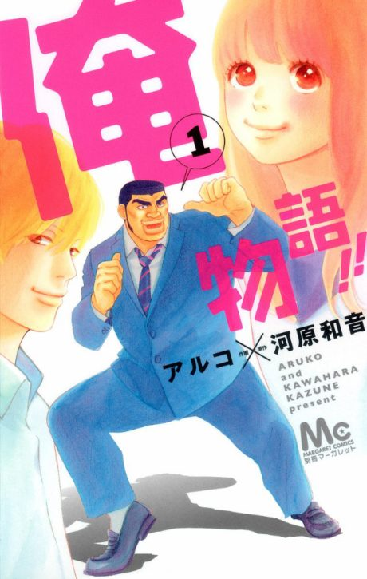

My Love Story!!
俺物語!!
Takeo, a giant teenager with a heart of gold, is used to girls falling for his handsome best friend, until Yamato falls for him.
After the anime, read the manga from Chapter 35.
7.7AniList score
—Animeter, no votes yet
24episodes
Rate it or report where you stopped
Anime finished. Where does the manga pick up?
Start at Chapter35
The anime ends at chapter 34 (the end of volume 9), so start at chapter 35, the first chapter of volume 10. The manga is finished.
13456 end
Season 1Start reading here
More like My Love Story!!
 Manga Ch. 408.4
Manga Ch. 408.4
 Manga Ch. 767.9
Manga Ch. 767.9
 Unclear7.9
Unclear7.9
 Manga Ch. 487.8
Manga Ch. 487.8
 Manga Ch. 177.2
Manga Ch. 177.2
 Manga Ch. 636.8
Manga Ch. 636.8
 Manga Ch. 257.0
Manga Ch. 257.0
 Done8.1
Done8.1
 Manga Ch. 157.5
Manga Ch. 157.5
 Unclear6.5
Unclear6.5
 Manga Ch. 718.3
Manga Ch. 718.3
 Manga Ch. 1148.1
Manga Ch. 1148.1